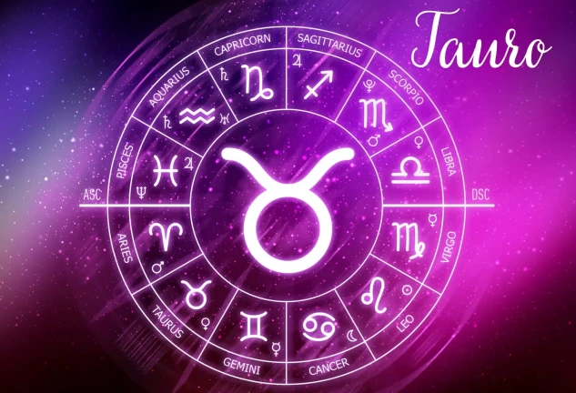
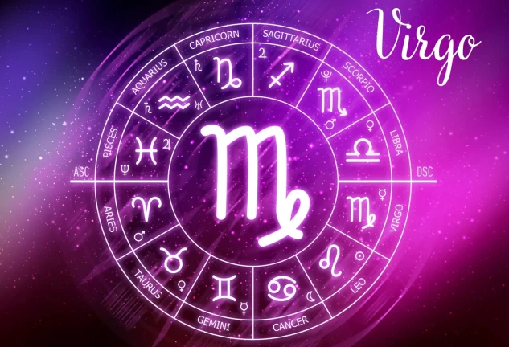

En astrología, Tauro es el segundo signo del zodíaco y el primero
de cualidad fija y naturaleza negativa o femenina, representado
por el toro. Pertenece a los signos fijos junto a Leo, Escorpio
y Acuario. Su signo opuesto y complementario es Escorpio.
Tradicionalmente, Tauro se relaciona con la firmeza, la
determinación y la constancia. También se asocia con la búsqueda
de seguridad y estabilidad, así como con una gran fuerza de voluntad.

En astrología, Virgo es el sexto signo del zodíaco, el tercero
de naturaleza negativa y de cualidad mutable. Simboliza el trabajo
y su símbolo representa una virgen. Pertenece junto a Tauro y
Capricornio al elemento tierra. Al igual que Géminis, está
regido por Mercurio.
Virgo se caracteriza tradicionalmente por su espíritu crítico,
precisión, reserva, paciencia y atención a los detalles.
También se relaciona con el pensamiento lógico, el análisis
y el interés por aprender.

En astrología, Capricornio es el décimo signo del zodíaco,
el quinto de naturaleza negativa y de cualidad cardinal.
Pertenece junto a Tauro y Virgo al elemento tierra.
Su signo opuesto y complementario es Cáncer.
Capricornio se relaciona tradicionalmente con la prudencia,
la responsabilidad y el sentido práctico. También se asocia
con la perseverancia y la planificación de objetivos.